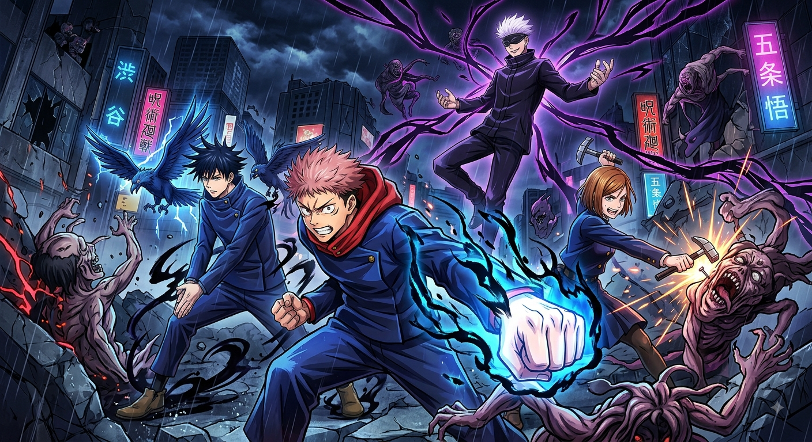
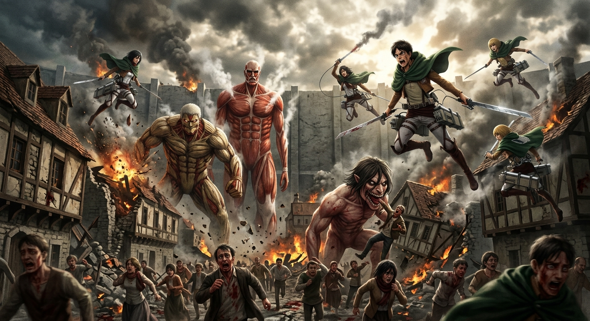
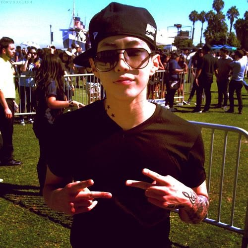
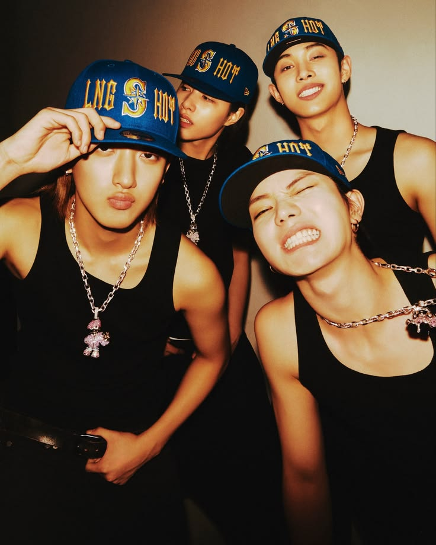
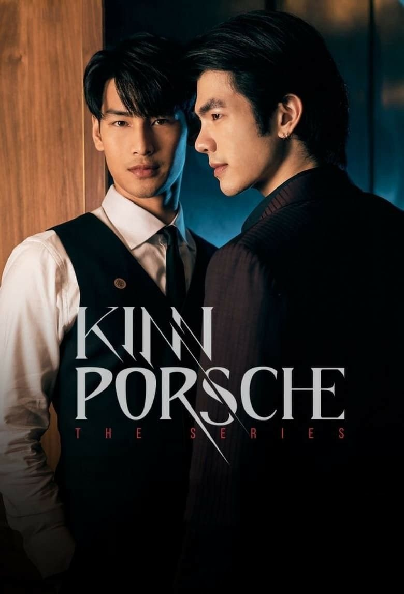

Vou compartilhar conhecimentos sobre meus animes, kpop e BL

Meu Primeiro Post: O Universo Implacável de Jujutsu Kaisen
Olá, sejam muito bem-vindos ao meu blog! Se você é apaixonado por animações japonesas, batalhas eletrizantes e personagens com personalidades marcantes, chegou ao lugar certo. Para dar o pontapé inicial nesta jornada, decidi começar falando sobre uma das obras mais impactantes dos últimos tempos. Abaixo, compartilho minhas impressões detalhadas sobre os personagens que absolutamente dominam a cena e tornam essa história inesquecível!
Satoru Gojo — A Divindade Inabalável: O homem mais forte do mundo não é apenas um feiticeiro jujutsu de classe especial; ele é um verdadeiro evento cultural ambulante. Protegido pela lendária técnica do Infinito e ostentando o Seis Olhos — escondidos sob sua icônica venda —, Gojo redefine o conceito de carisma e soberba. Ele entra em qualquer campo de batalha com um deboche natural, encarando ameaças milenares como o próprio Sukuna com um sorriso no rosto e a promessa reconfortante de que "vai dar tudo certo" simplesmente porque ele está presente. É a combinação perfeita entre poder absoluto, estética impecável e uma atitude inabalável que atrai todos os refletores para si.
Ryomen Sukuna — O Absoluto Rei das Maldições: Sukuna é a personificação do egoísmo e da força bruta no seu estado mais puro. Ele não deve lealdade a ninguém e move o mundo ao seu redor puramente por capricho. O Rei das Maldições acorda de um sono secular e, por puro tédio, é capaz de devastar distritos inteiros como Shibuya sem hesitar por um segundo. Ao conjurar sua Expansão de Domínio com uma displicência assustadora, ele caminha entre os escombros mantendo a postura serena e implacável. Embora seja um vilão cruel e impiedoso, é impossível negar que ele entrega uma presença de cena magistral e uma imposição visual que dita o ritmo da narrativa.
Yuji Itadori — O Coração de Ferro e Determinação: Nosso garoto de ouro carrega o peso do mundo nas costas e enfrenta provações emocionais e físicas que testariam o limite de qualquer um. Mesmo sendo empurrado constantemente ao seu ponto de ruptura e sofrendo perdas devastadoras ao longo da jornada, Yuji recusa-se a desistir. Sua força de vontade e resiliência física são extraordinárias. Quando a situação exige, ele encara o perigo de frente, canalizando toda a sua determinação em golpes devastadores como o Divergent Fist e o lendário KokuSen (Punho Divergente e Black Flash), provando que o verdadeiro heroism se constrói na perseverança.
Maki Zenin — A Lenda da Vontade Inflexível: A verdadeira patroa de Jujutsu Kaisen! Enfrentando desde o nascimento o preconceito e o desprezo de sua própria família abusiva por não possuir energia amaldiçoada, Maki reescreveu seu próprio destino com determinação e aço. Ela transformou o que muitos viam como uma fraqueza em sua maior vantagem, alcançando uma restrição celestial que a tornou um ápice de força, velocidade e maestria com armas. Sem precisar de feitiçaria, sua presença no campo de batalha faz até as maldições mais antigas tremerem. Maki é o exemplo definitivo de superação, impondo seu respeito na base do talento puro e da força bruta.
Por: Isabelly Vitoria

O Elenco de Milhões (e Seus Traumas)
Eren Yeager: Começou o anime querendo matar todos os titãs chorando no chão e terminou... bem, digamos que ele virou o protagonista/vilão mais complexo e controverso dos animes. O homem simplesmente resetou o tabuleiro geopolítico do mundo por livre e espontânea vontade. É errado? É. Mas entregou um enredo inesquecível!
Levi Ackerman: O capitão mais baixinho, porém o mais letal do universo. Se o Levi saca as espadas e começa a girar no ar (o famoso Beyblade humano), pode ter certeza de que o titã mais poderoso vai virar purê em segundos. Tudo isso enquanto mantém o tédio e a mania de limpeza impecáveis. Um verdadeiro ícone!
Mikasa Ackerman: A força da natureza em forma de mulher. Protetora oficial do Eren, fria, calculista e com uma habilidade em combate que deixa qualquer um no chinelo. Ninguém mexe com a Mikasa e sai ileso.
Hange Zoe: A cientista mais caótica e apaixonada por titãs que você respeita. Enquanto todo mundo está correndo pela vida, Hange está lá analisando a composição da pele de um monstro gigante com um brilho nos olhos. Perfeita!
Os Maiores Babados da Ilha de Paradis
As Muralhas: Passamos temporadas inteiras achando que eram só proteção contra gigantes... para descobrir que as muralhas são feitas de titãs colossais espremidos lá dentro. Um verdadeiro plot twist de novela das nove!
A "Freedom": A busca pela liberdade que custa a humanidade inteira. Eren e o famoso "tatakae" (lute) viraram meme, mas a verdade é que o peso psicológico desse anime não poupa ninguém.
O Porão do Eren: O segredo mais guardado da história que mudou completamente a perspectiva de tudo o que achávamos que sabíamos sobre o mundo lá fora.
Por: Isabelly Vitoria

Park (Park Jae-beom) é uma das figuras mais completas e influentes do entretenimento asiático moderno. Ele revolucionou a forma como o hip-hop e o R&B são vistos na Coreia do Sul, mostrando que era possível sair da estrutura tradicional do K-pop e construir uma carreira independente de sucesso internacional.
Origens e Início no K-pop: Nascido em Edmonds, Washington (região metropolitana de Seattle), Jay Park cresceu imerso na cultura de rua e no breakdance (b-boying). Em 2008, foi descoberto pela JYP Entertainment e estreou como líder e vocalista principal do grupo 2PM. O grupo virou um fenômeno rapidamente, mas em 2009 ele acabou se desligando da formação e voltando para os Estados Unidos após a polêmica de posts antigos na internet.
O Fenômeno do YouTube e Carreira Solo: No início de 2010, enquanto trabalhava em uma loja de pneus em Seattle, ele postou um cover caseiro da música
"Nothin' on You" (de B.o.B e Bruno Mars) no YouTube. O vídeo bateu milhões de visualizações em pouquíssimas horas e provou o tamanho da sua base de fãs. O impacto abriu portas para o lançamento do seu primeiro EP solo, Count on Me, e do álbum New Breed (2012), que alcançaram o topo das paradas sul-coreanas.
Construção de um Império Independente: Em vez de assinar com outra grande agência tradicional de K-pop, Jay Park preferiu criar seu próprio caminho:
AOMG (2013): Fundou a gravadora focada em hip-hop e R&B, reunindo alguns dos maiores produtores, rappers e cantores da cena sul-coreana.
H1GHR MUSIC (2017):Criou um selo internacional ao lado do seu parceiro de longa data Cha Cha Malone, ajudando a lançar artistas sul-coreanos e talentos da sua cidade natal, Seattle.
MORE VISION (2022): Após deixar o cargo de CEO da AOMG e da H1GHR MUSIC em 2021, ele iniciou este novo projeto voltado para agenciamento de artistas, grupos e produção de conteúdo.
Marco Internacional com a Roc Nation: Em 2017, Jay Park fez história ao se tornar o primeiro artista asiático-americano a assinar contrato de gerenciamento com a Roc Nation, a famosa gravadora e agência norte-americana fundada por Jay-Z.
Versatilidade e Empreendedorismo: Além da música, ele se destacou como produtor, jurado de programas de competição (como Show Me The Money, Asia's Got Talent e Peak Time), apresentador de talk show (The Season: Jay Park's Drive) e até lançou sua própria marca de soju tradicional (*Won Soju*), que virou febre de vendas na Coreia.
Sua identidade artística junta a cultura b-boy dos EUA, vocais suaves voltados ao R&B contemporâneo, rimas rápidas no rap e uma presença de palco marcada por coreografias marcantes.
Por: Isabelly Vitoria

LNGSHOT
O LNGSHOT não surgiu do nada, e a história por trás da formação do grupo é bem massa. Como o Jay Park é um cara lendário na cena do hip-hop coreano e fundou a More Vision exatamente pra ter mais liberdade, ele queria montar um boy group que não parecesse "fabricado", sabe? A ideia era achar talentos brutos, com muita personalidade, e deixar os moleques moldarem a própria identidade.
Antes mesmo do debut oficial, eles já tavam fazendo barulho no underground e nas redes sociais. Eles lançaram a *4shoboiz Mixtape* no finalzinho de 2025 de um jeito super descontraído, quase como se fossem quatro amigos só curtindo no estúdio e soltando música pra galera. A faixa "Saucin'" foi um dos primeiros sons que fez a galera do K-pop ligar o alerta e pensar: "Peraí, esses caras têm um molho diferente".
Aí, quando chegou janeiro de 2026, eles baixaram com o EP de estreia *Shot Callers*. A música de trabalho, "Moonwalkin'", tem aquela batida marcante, vocal suave mesclado com R&B clássico e um rap super fluido. Nas apresentações ao vivo, dá pra ver que eles focam muito no carisma e na presença de palco, em vez de ficarem totalmente travados em uma coreografia milimetricamente robótica.
Dá uma olhada nos quatro integrantes pra você se situar:
Ohyul: É o líder e vocalista. Ele passa uma vibe mais centrada e segura, liderando o grupo no palco e nas entrevistas.
Ryul:O rapper principal do grupo. Ele tem um tom de voz bem marcante e traz aquela energia mais rua/hip-hop pras faixas.
Um cara super versátil, que transita muito bem entre vocal e performance, dando equilíbrio pro som deles.
Louis: O caçula (maknae) e vocalista principal. Apesar de ser o mais novo, o moleque tem uma extensão vocal gigante e segura os agudos do grupo.
A comunidade de fãs, os SHOTTIES, tá crescendo rápido exatamente porque o som deles agrada tanto quem já curte K-pop quanto quem é mais do lado do R&B e Hip-Hop ocidental.
Por: Isabelly Vitoria

Kinn Porsche
A Trama PrincipoteA história começa com o Porsche (Apo Nattawin), um cara que trabalha como barman, é um lutador incrível, mas está super endividado tentando sustentar o irmão mais novo (o Porchay). Um belo dia, o Kinn (Mile Phakphum), que é o herdeiro de uma família poderosíssima da máfia, surge correndo dos inimigos no meio da rua. O Porsche vê a cena, aceita salvar a pele do cara em troca de grana e mete a porrada nos perseguidores. O Kinn fica tão impressionado com a habilidade dele que cisma que o Porsche precisa virar seu guarda-costas pessoal. O Porsche tenta enrolar, mas como a situação financeira apertou real, ele acaba aceitando. O problema é que o ambiente da máfia é super rígido, e a convivência dos dois no mesmo teto vira um misto de farpa, provocação e, claro, um fogo absurdo. Os Outros Casais e PersonagensNão é só dos dois principais que a série vive, o elenco secundário rouba a cena bonito:Vegas & Pete: Esse é o casal mais intenso e caótico da série. Vegas é o primo meio psicopata da Segunda Família, e o Pete é o guarda-costas fofo e leal da Família Principal. Em um certo momento, o Pete cai numa cilada e acaba sequestrado pelo Vegas. A dinâmica deles entrega uma vibe meio cheia de altos e baixos emocionais que deixou todo mundo obcecado na época. Kim & Porchay: O Kim (irmão do Kinn, interpretado pelo cantores Jeff Satur) se aproxima do Porchay (irmão do Porsche) com intenção de investigar o passado do Porsche. O problema é que o Chay é fãço do Kim, gerando um rolo emocional e um romance bem mais fofo/juvenil. Thankhun: O irmão mais velho do Kinn que é simplesmente o alívio cômico perfeito da série. Ele é super espalhafato, odeia os negócios da máfia e vive fazendo drama com seus guarda-costas.
Por que todo mundo surtou quando lançou?Qualidade de Cinema: A fotografia e a produção não parecem de um BL tradicional, tem cara de filme de ação mesmo.Química Bruta: A sintonia entre o Mile e o Apo é surreal. As cenas de tensão, os beijos e os momentos mais quentes foram super bem dirigidos. Trilha Sonora: A música tema cantada pela banda Slot Machine e as faixas do Jeff Satur grudam na cabeça.É aquela série completa: tem tiroteio, facada, traição familiar e muito dorama romântico para maratonar!
kinnporsche é umas das melhores series para se assitir os atores são muito bons no que fazem atuan com todo o caraçãp deles é uma serie maravilhosa voce deveria vez uma serie que meche com o emocional de tabom quando assiti chorei muito de tanta emoção todos os atores capricharam nas atuaçao deles todos eles foram maravilhosos é a melhor serie de toda a minha vida toda pessoa que é fan de bl recomenda essa serie para ver